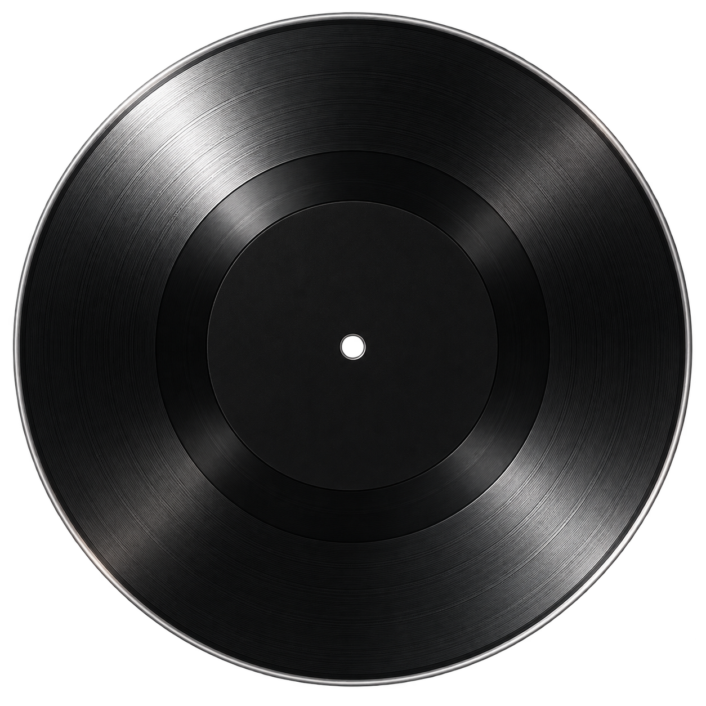

MUSICFREE / LYRICS STUDY
唱这一句，提前看见下一句
桌面歌词与迷你窗口的双行样式提案。用真实 HTML/CSS 展示布局；以下是原创示例文字，不接入播放器、不播放音频。
01 / 桌面歌词窗口
透明浮窗 · 两句居中‹›⌑×
上行：当前正在唱下行：下一句预告
当前句保持清晰高亮；下一句字号约 78%，保留描边与阴影。到下一句时，两行一起更新。
02 / 迷你窗口
两行固定，不随句长增高
♪
移到封面可查看控件布局。两句始终保留；长句在迷你窗口独立省略，悬停文字可看全文。
阅读顺序始终明确
- 上行是正在唱的一句，下行提前展示接下来的一句。
- 下行到点升级为当前句，再补入新的下一句。
- 暂停保留两句；最后一句之后留空，不回绕到开头。
- 默认优先预告下一句，翻译继续在歌曲详情查看。
本轮是双句提示，不模拟歌词没有提供的逐字时间。选择“前奏”“长句”“最后一句”等场景检查边界。
样式提案 · 待确认后开发
自动演示每 3 秒切换一句，只演示整句同步。预览中的播放控件控制示例文字；未来播放器控件仍控制歌曲。